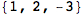
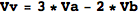
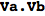

1. 基本
四則演算は，加「+（プラス）」減「-（ハイフン）」乗「*（アスタリスク）」除「/（スラッシュ）」．
等号（方程式を記述する際）は「==」，代入（定義）は「=」．
「=」を使って定義したものは，Mathematicaカーネルが動いている間だけ有効．カーネル（またはMathematica自体）を再起動した場合は，もう一度定義しなければならない．
計算（命令）を実行するには「Shift 」を押しながら「Enter」．セルごとに実行する必要がある（実行したいセルを選択，またはカーソルがそのセルで点滅している状態で）．
「セル」とはMathematicaノートブック（このファイル）を構成する最小単位．
例題 1.1：2 + 2 を計算しなさい．
In[1]:=
Out[1]=
例題 1.2：Na を１と定義し，Na の値を出力しなさい．
In[2]:=
Out[2]=
問題 1：Nb を2と定義し，Nb の値を出力しなさい． さらに，Na + Nb を計算しなさい．
In[3]:=
Out[3]=
In[4]:=
Out[4]=
2. ベクトル
ベクトルはリストで表す．
リストとは複数の要素（数）を「,（コンマ）」で区切って「{」と「}」（中括弧）で囲んだもの．
In[5]:=
In[6]:=
Out[6]=

ベクトルの和は「+」，差は「-」，実数倍は「*」．
命令あとに「;（セミコロン）」をつけると，計算結果が出力されない（実行されるだけ）．
In[7]:=
Out[7]=
In[8]:=
Out[8]=
In[9]:=

Out[9]=
3. ベクトルの内積と長さ
内積は「.（ピリオド）」
例題 3：ベクトル Va と Vb の内積を計算しなさい．
In[10]:=

Out[10]=
問題 3.1：ベクトル Vu と Vv の内積を計算しなさい．
In[11]:=
Out[11]=
問題 3.2：
(1) 内積を利用して，ベクトル Vu の長さを計算しなさい．
(2) 内積を利用して，ベクトル Vv の長さを計算しなさい．
ルートは 「Sqrt[ ]」（Mathematica の命令はすべて大文字から始まります．）
In[12]:=
Out[12]=
In[13]:=
Out[13]=
ベクトルの長さは 「Norm[ ]」 で計算できる．
In[14]:=
Out[14]=

In[15]:=
Out[15]=

4. ベクトルの外積
ベクトルの外積は「Cross[ ]」
例題 4：ベクトル Va と Vb の外積を計算しなさい．
In[16]:=
Out[16]=
問題 4：  と の外積を計算しなさい．
と の外積を計算しなさい．
In[17]:=
Out[17]=
5. 空間内の直線

例題 5.1：点 を通り，方向ベクトル である直線上の点を媒介変数表示しなさい．
である直線上の点を媒介変数表示しなさい．
In[18]:=
Out[18]=
媒介変数表示され図形を描画するには「ParametricPlot3D[“媒介変数表示（リスト）” , ”変数の範囲（リスト）” ]」
“変数の範囲”は「 { “変数”, “変数の最小値”, “変数の最大値”}」と指定する．
例題 5.2：例題 5.1 の直線を適当な範囲で描画しなさい．
In[19]:=
Out[19]=
6. 空間内の平面
例題 6.1：点 を通り，ベクトルとで張られる平面上の点を媒介変数表示しなさい．
In[20]:=
Out[20]=
問題 6.1：例題 6.1 の平面を適当な範囲で描画しなさい．
In[21]:=
Out[21]=
問題 6.2：例題 6.1 の平面の法線ベクトルを求めなさい．
In[22]:=
Out[22]=
例題 6.2：例題 6.1 の平面上の点をとし，x, y, z が満たす方程式を求めなさい．
In[23]:=
Out[23]=
「%」は一番最後に出力したものを意味する．
In[24]:=
Out[24]=

例題 6.3：例題 6.2 で求めた方程式が表す図形（平面）を描画しなさい．
x,y,z の方程式で表される図形を描画するには「ContourPlot3D[“方程式 f(x,y,z)==0” , “xの範囲（リスト）”, “yの範囲（リスト）”, “zの範囲（リスト）” ]」
In[25]:=
Out[25]=
7. 平面内の円周
原点が中心で，半径が1の円の媒介変数表示；
In[26]:=
Out[26]=
例題 7.1：原点が(a, b)で，半径が r の円上の点を(x, y)とするとき，x, y の満たす方程式を求めなさい．
In[27]:=
Out[27]=
8. 空間内の球面
原点が中心で，半径が1の球面の媒介変数表示；
In[28]:=
Out[28]=

問題 7.1：原点が(a, b, c)で，半径が r の球面上の点を(x, y, z)とするとき，x, y, z の満たす方程式を求めなさい（例題7.1 を参考にしなさい）．
In[29]:=
Out[29]=